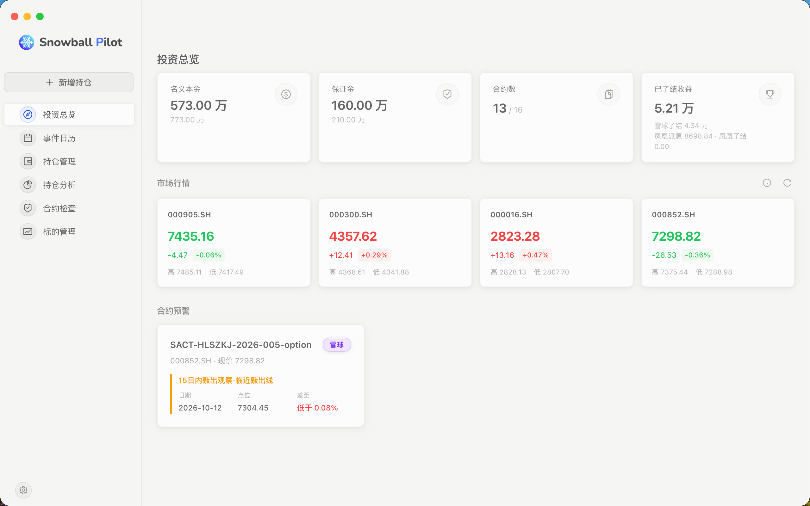

四张卡：名义本金、保证金、合约数、已了结收益。每张都分「存续中」和「累计」，一眼看出当前敞口和历史赚亏。
下面是四大宽基指数的实时行情和涨跌幅，可以设置 10 秒到 5 分钟自动刷新。
预警看板：所有快要出事——快敲出、快派息、快敲入——的合约都排在上面，鼠标点进去直接看详情。不用自己翻。
场外雪球、凤凰合约的持仓管理工具
最新版本
场外雪球、凤凰合约的持仓管理工具——盯市、预警、事件跟踪、事后对账，一处搞定。
你手上管着几十笔场外合约——雪球、凤凰。它们的条款各不相同：什么时候敲出、敲出线在哪、什么时候派息、派息线在哪、保证金留多少。
这些条款一旦记错、漏记一次观察日，损失就是真金白银。
Snowball Pilot 把这些条款录进去，之后所有数字自动算、所有日子自动提醒、所有记错的地方自动挑出来。你只需要看它指出来的地方。